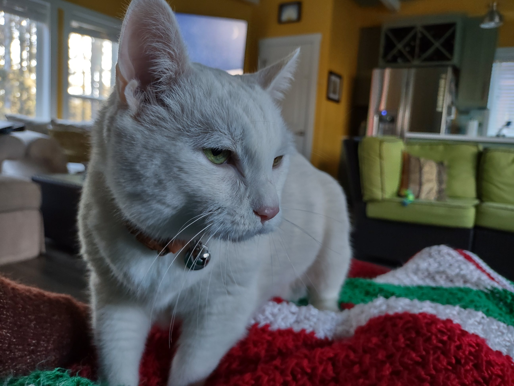

(b. 25 July 2005) 29 December 2013 to 07 February 2024
Snowflake. Sweet Pea. Great White. Pretty Kitty. Sweetheart. Beautiful. Beautiful One. Honey Baked. Tenacious C. Darling One. Gatta Bianca. Her Nibs. Saucy Minx. Trouble. Little One. Beauty. Bella Ragazza. Our Girl. Queen B. White Puma.

No trackers. No advertising. Privacy policy: no data collected. Any media not self-hosted will only be linked to.
This site should automatically detect whether you are in normal mode or dark mode and change accordingly. I say "should" because "will" seems a tad optimistic.
I am over half a century old. I was born in the previous millennium. Even though creatures have been aerobically respiring for hundreds of millions of years, I am not always the best at it. Naps and 4-color pens are groovy. I rarely use an umbrella. I shall someday have a Library of Congress Reader Identification Card. One of my biggest dreams, after world peace, is to live somewhere with beau coup snow so I can shovel lots then sit by the fire reading a good book.
Two quotes from The Princess Bride seem to apply to me: "No one of consequence." "Get used to disappointment."
As you wish.
This description of Tobago might apply, as well: relaxed, slow-paced, and largely undeveloped.
¡Unknown by billions!
I love you like a nail loves a hammer.
I had a very short story of mine, Piggly Wiggly, read by Nuzzle House on their podcast. I am absurdly happy about this.
This is a handcrafted site. Sorry about that. This means lots of miss-takes mistakes on my part. Sorry about that. It's made with Notepad and GitHub hosting. Sorry about that. I've thought about calling it "slow coding" or "artisanal web crafting" but it just boils down to me being too cheap to pay for webhosting and too lazy to use a CMS. Sorry about that.
There may eventually be an rss feed.
I'm considering Cactus Comments or Webmentions, but I'm too lazy to set up the former and too confused to set up the latter.